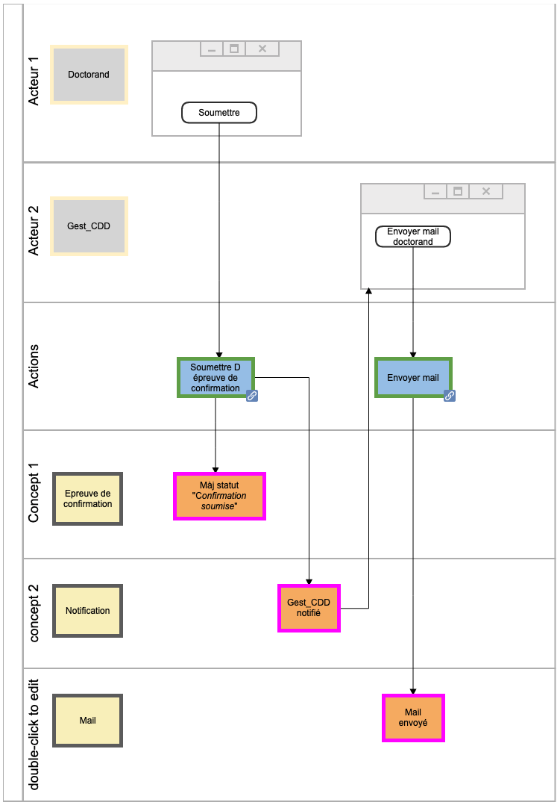

<!doctype html>
<html>
<head>
  <meta charset="utf-8">
  <meta name="viewport" content="width=device-width, initial-scale=1.0, maximum-scale=1.0, user-scalable=no">

  <title>Implementing Domain-Driven Design in Django</title>

  <link rel="stylesheet" href="dist/reset.css">
  <link rel="stylesheet" href="dist/reveal.css">
  <style>
    /*********************************************
     * GLOBAL STYLES
     *********************************************/
    :root {
      --r-background-color: #111;
      --r-main-font: Open Sans, sans-serif;
      --r-main-font-size: 28px;
      --r-main-color: #eee;
      --r-block-margin: 20px;
      --r-heading-margin: 20px 0;
      --r-heading-font: Montserrat, Impact, sans-serif;
      --r-heading-color: #eee;
      --r-heading-line-height: 1.2;
      --r-heading-letter-spacing: -0.03em;
      --r-heading-text-transform: none;
      --r-heading-text-shadow: none;
      --r-heading-font-weight: normal;
      --r-heading1-text-shadow: none;
      --r-heading1-size: 3.77em;
      --r-heading2-size: 2.11em;
      --r-heading3-size: 1.55em;
      --r-heading4-size: 1em;
      --r-code-font: monospace;
      --r-link-color: #e7ad52;
      --r-link-color-dark: #d08a1d;
      --r-link-color-hover: #f3d7ac;
      --r-selection-background-color: #e7ad52;
      --r-selection-color: #fff;
    }

    .reveal ul img {
      vertical-align: middle;
    }

    .reveal p > img {
      margin: 0;
    }

    .reveal {
      text-shadow: #000 0 0 .5em;
    }
  </style>
  <link rel="stylesheet" href="dist/theme/night.css">
  <style>
    .reveal ol, .reveal dl, .reveal ul {
      margin: var(--r-block-margin);
    }
    .reveal ol ol, .reveal dl dl, .reveal ul ul {
      margin-top: 0;
      margin-bottom: 0;
    }

    .reveal p + ul {
      margin-top: 0;
    }

    .reveal .alternate h1,
    .reveal .alternate h2,
    .reveal .alternate h3,
    .reveal .alternate h4,
    .reveal .alternate h5,
    .reveal .alternate h6 {
      color: #033369;
    }
  </style>

  <!-- Theme used for syntax highlighted code -->
  <link rel="stylesheet" href="stackoverflow-dark.css">
</head>
<body>
<div class="reveal">
  <div class="slides">
    <section
      data-markdown
      data-separator-notes="^Notes:"
      data-background-image="homepage_xl.png"
      data-background-opacity="0.8"
    >
  <script type="text/template">
<!-- .slide: class="alternate"  data-background-image="djangocon_white.jpg" data-background-opacity="1" -->

# Implementing Domain-Driven Design in Django


---

## Who am I?

> Sébastien Corbin (@SebCorbin)

- been doing Python/Django since 2016
- full-stack, previously PHP/Drupal, 10-year XP in web dev
- local meetup co-organizer, tutor

Notes:
- it's my first DjangoCon
- my english is a bit rusty, so I hope my slides are pretty enough

---

## Who I work for?

> Makina Corpus <https://makina-corpus.com/>

- small-sized agency (~50 persons) in Toulouse and Nantes, France
- Python (web business apps, GIS, data science & AI)
- PHP (web business apps)
- Front-end
- mostly open-source <!-- .element: class="fragment" -->
    - [django-leaflet](https://github.com/makinacorpus/django-leaflet)
    - [django-geojson](https://github.com/makinacorpus/django-geojson)
    - [django-safedelete](https://github.com/makinacorpus/django-safedelete)
    - [django-jsignature](https://github.com/fle/django-jsignature)

Notes:

---

## Some of our products

<div style="flex: auto" class="r-stretch">
  <div>
    
    <p>A trail and natural park managing tool</p>
  </div>

  <div>
    
    <p>A low code platform (DB as a spreadsheet)</p>
  </div>
</div>

Notes:


---

## Outline

1. The OSIS project
2. The why and when for choosing DDD
3. Common tactical patterns in Python/Django
4. Our take on DDD usage

Notes:

- Code will be shown
- I hope to have some time for the questions (25mn max)


---
<!-- .slide: class="alternate"  data-background-image="djangocon_white.jpg" data-background-opacity="1" -->

# The OSIS project

Notes:

---

-  Université Catholique de Louvain *alias* UCL
-  Open Student Information System
- Long-term project: first release of OSIS on January 31, 2016

> <https://github.com/uclouvain>

Notes:
It's "almost" open-source, main project has recently been taken out of public visibility
I hope it will rolled back, but you can find the code I will be showing the osis-admission subproject

A few developers of the OSIS team (meaning our client) are in the room, so if I say bad things I may lose my job.
Just kidding, we've been working together for few years now, and it's a joy

---

## OSIS Business

- Student admission (bachelor, master, doctorate, etc.)
- Student path management
- Course and exam catalogue and enrollment
- Tutor applications
- Assessments and score encoding
- Internships
- Partnerships with other universities (financing, agreements)
- ...

*We* were in charge of implementing partnerships, and recently remaking the student admission system

Notes:

partnership 3 years ago

As you can see, it's a lot of stuff, so a lot of code to maintain

---

## Architecture

~ 35 000 students and ~ 6 000 staff members to handle

Security-oriented architecture

```text
			┌──────────────────────┐                  ┌────────────────────────┐
			│      Backoffice      │  API generated   │    Frontoffice         │
			├──────────────────────┤     in Python    ├────────────────────────┤
			│                      │                  │                        │
			│  Internal portal     │                  │  External portal       │
			│                      │◄────────────────►│                        │
			│                      │                  │                        │
			│ > Managers           │                  │ > Students             │
			│ > Administrators     │                  │ > Tutors               │
			│                      │                  │                        │
			└──────────────────────┘                  └────────────────────────┘
```

On the Django side:

- 65+ django apps
- ~250 models


Notes:
thrity five K students, six thousands staff members
- 2 servers, 2 Django
- the backoffice is only accessible through a VPN, for security reasons
- the public facing portal communicates through an API generated with openapi generator
- FO only stores basic data in database
- it is an historic decision, could be replaced by a framework-based frontend later
- it's a big monolithic app, but they are continuously trying to make it better

---
<!-- .slide: class="alternate"  data-background-image="djangocon_white.jpg" data-background-opacity="1" -->

# What is DDD, why and when?

Notes:
ok, so this was the introduction on the beast we were fighting against, now about DDD?

---

> **Domain-Driven** ~~Development~~ **Design**
>
> A major software design approach, focusing on modelling software to match a domain according to input from that domain's experts. <small>(Source: Wikipedia)</small>

As a developer, you're **not** the expert.

It's an approach for conception, not a software recipe, nor a framework.
It's language-agnostic.
Theorized by Eric Evans.

Notes:
- Who here has heard about DDD ?
- Who uses it everyday ?

---

## Business domain at the center

- As you're not the expert, you must speak the same language as domain's experts, have the same terms.
- If needed (because sometimes they're speaking a weird language), a glossary can be created <!-- .element: class="fragment" -->
- Your code must reflect these terms <!-- .element: class="fragment" -->
- If your domain is expressed in French, then yes,
  your DDD code should be in French <!-- .element: class="fragment" -->
  

Notes:
- So I'll be showing some code that is in French (which I will translate as much as I can)
but the important part is the approach, and every domain is different obviously you may not care about students.
- You may be seeing both french and english, as we french people like to call it "frenglish"
- Who here is French ?

---

## Domain? Why? What about data?

> Django is a model-driven (or data-driven ?) framework !

- Yes, but for complex processes, the code can look like spaghetti <!-- .element: class="fragment" -->
- When your model changes, you risk an alteration of the process <!-- .element: class="fragment" -->
- Sometimes you code things you don't understand (and you're translating it wrong) <!-- .element: class="fragment" -->
- A model-driven architecture represents a developer's way of thinking, and teams can change over time <!-- .element: class="fragment" -->

Notes:
Humans change, you know, and this talk is more about humanity and how to handle people more than about programming

---


Notes:

So you may have seen this from time to time, this image basically represents the communication between people
around a project, and the lifecycle of a project

---

## When to use DDD?

- Project must be maintained in the **long-term** (5 years +)
- Lots of business domains
- You have ~~time~~ **money** and software crafting experience


Notes:

---

## When _not_ to use DDD?

- App is a simple CRUD
- Business is already answered by third-party (CMS, e-commerce, etc.) <!-- .element: class="fragment" -->
- No maintenance needed over time, no evolution <!-- .element: class="fragment" -->
- App is "too simple" or no complex business <!-- .element: class="fragment" -->
- Short time-to-market or Proof-of-Concept <!-- .element: class="fragment" -->
- Your dev team is too junior <!-- .element: class="fragment" -->

Notes:

---

### Can I use DDD in my existing project?

Yes

- you can separate and refactor small parts of your domain first
- you can design new parts of your domain apart from the existing code

> DDD has been introduced in OSIS 5 years after the first release

Notes:

---

<!-- .slide: class="alternate"  data-background-image="djangocon_white.jpg" data-background-opacity="1" -->

# Common patterns

Notes:

---

## Ubiquitous language


- Use the right terms across your domain <!-- .element: class="fragment" -->
- Define them at the beginning, they must come from the business but they can be discussed <!-- .element: class="fragment" -->
- A term can have another meaning in another context <!-- .element: class="fragment" -->
- Once stated, if needed, create a glossary to explain their meaning <!-- .element: class="fragment" -->

Notes:
- Ubiquitous means "everywhere", omnipresent, and that means it's one the most important things to take care of.
because if people don't understand each other, have the same language/terms, this will be failing fast.
- As for the code, a glossary could live in a docstring of a package's dunder init

---

## Bounded contexts

> Separate your business into small parts, each one solving a problem.

- means that an object can have different name in different contexts <!-- .element: class="fragment" -->
  - User is a *customer* in the *commerce* domain
  - User is an *account* in the *invoicing* domain
  - User is a *recipient* in the *shipping* domain
- in the code, bounds usually means namespace <!-- .element: class="fragment" -->
- does not mean contexts cannot communicate, but data may have to be translated between <!-- .element: class="fragment" -->
- data exposure can depend on context (even if close in storage) <!-- .element: class="fragment" -->
  - payment mode is only needed in *invoice* domain
  - address could be different in *invoice* and *shipping* domains

Notes:

---

## Shared kernel

- A shared kernel can be created for objects that are used everywhere
- It can be present at multiple levels of the project
- It prevents duplication
- Beware of it inflating if you put too much in it!

*Common examples : user info, addresses, notifications*

Notes:

---

## Onion architecture

```text [|8|6|4|2]
                            ┌──────────────────────────┐
                            │ UI / Presentation layer  │
                            │ ┌──────────────────────┐ │
                            │ │    Service layer     │ │
                            │ │ ┌──────────────────┐ │ │
                            │ │ │ Repository layer │ │ │
                            │ │ │ ┌──────────────┐ │ │ │
                            │ │ │ │ Domain layer │ │ │ │
                            │ │ │ └──────────────┘ │ │ │
                            │ │ └──────────────────┘ │ │
                            │ └──────────────────────┘ │
                            └──────────────────────────┘
```
This is OSIS' take, some DDD architectures use *hexagonal* or *clean* architecture

Notes:

---

### An example of directory structure

```text [1|69|2,20,22|3,12|29,45|45-60|47-50|58-60|52|46,51|53-57|81-98|95-96|92-94]
ddd
├── admission (enrollment process)
│   ├── preparation
│   │   ├── builder
│   │   ├── domain
│   │   ├── dtos
│   │   ├── repository
│   │   ├── test
│   │   └── use_case
│   │       ├── read
│   │       └── write
│   └── validation
│       ├── builder
│       ├── domain
│       ├── dtos
│       ├── repository
│       └── use_case
│           ├── read
│           └── write
├── formation_continue (a continuing education process)
│   └── ...
└── doctorat (a doctoral process)
    ├── builder
    ├── domain
    │   ├── model
    │   ├── service
    │   └── validator
    ├── dtos
    ├── epreuve_confirmation
    │   ├── builder
    │   ├── domain
    │   │   ├── model
    │   │   └── service
    │   ├── dtos
    │   ├── repository
    │   ├── test
    │   │   ├── factory
    │   │   └── use_case
    │   │       ├── read
    │   │       └── write
    │   ├── use_case
    │   │   ├── read
    │   │   └── write
    │   └── validators
    ├── formation
    │   ├── builder
    │   ├── domain
    │   │   ├── model
    │   │   ├── service
    │   │   └── validator
    │   ├── dtos
    │   ├── repository
    │   ├── test
    │   │   ├── factory
    │   │   └── use_case
    │   │       ├── read
    │   │       └── write
    │   └── use_case
    │       ├── read
    │       └── write
    ├── repository
    ├── test
    │   ├── factory
    │   └── use_case
    │       └── read
    └── use_case
        ├── read
        └── write
infrastructure
├── admission
│   ├── preparation
│   │   ├── domain
│   │   │   └── service
│   │   │       └── in_memory
│   │   └── repository
│   │       └── in_memory
│   └── validation
│       └── repository
│           └── in_memory
├── formation_continue
└── doctorat
    ├── domain
    │   └── service
    │       └── in_memory
    ├── epreuve_confirmation
    │   ├── domain
    │   │   └── service
    │   │       └── in_memory
    │   └── repository
    │       └── in_memory
    ├── formation
    │   ├── domain
    │   │   └── service
    │   │       └── in_memory
    │   └── repository
    │       └── in_memory
    └── repository
        └── in_memory
```

Notes:

1. there are two main directories ddd and infrastructure
2. we have our main contexts
3. which can have sub contexts
4. Let's see what we have in a bounded context
5. We have the main components of our domain (we'll go further into the code later)
6. We have the use_case (also called application services)
7. Some useful classes to manipulate data
8. And unit tests
9. In the infrastructure, we map the same directory structure
10. only we add in-memory and django implementations for each context
11. as you can see some domain services could also need different implementations
12. and aside from these you have a real django app, with views, models, urls, et caetera

---


---

## Vocabulary

- Use case : some action, responding to a query (read) or command (write) made by someone <!-- .element: class="fragment" -->
- Aggregate : a root domain model entity, entry point to manipulate data, masking other domain entities <!-- .element: class="fragment" -->
- Repository : your way to the data, loading or saving aggregates, or fetching DTO <!-- .element: class="fragment" -->
- DTO : Data-Transfer-Object, a dumb data class used to I/O from context <!-- .element: class="fragment" -->
- Domain service : useful when dealing with multiple or complex things <!-- .element: class="fragment" -->
- Validator : prevents manipulating a wrong state in your domain <!-- .element: class="fragment" -->

Notes:

---

## Use cases

Also called "application services", basically a user story

Special technique : **Event storming**

Get everyone in the business around a table to state on what should the application do
(take this time to also establish the glossary)


Notes:

---

**Event modeling**

Refine previous work, adding concepts of user interface and actors




Notes:

---
<!-- .slide: class="alternate"  data-background-image="djangocon_white.jpg" data-background-opacity="1" -->

# Our take

Notes:

---

## A brief comment on Python

- Use at least python 3.7 for **dataclasses**
- `attrs` is a nice library for default attribute factories, frozen and slotted classes
- **Using typing** makes it easier, `mypy` (with `django-stubs`) is your friend after that
- **Avoid using any of Django** in `ddd` directory (apart maybe `gettext_lazy` and `timezone`)

#### Now some code !

Notes:

---

### An example of an aggregate

- it's a **root entity** (could be a single model in Django, or multiple, or a part)
- it has an **identity** (usually PK, may be an uuid)
- it has a **state** (data attributes) and some **behaviors** (methods encapsulating the business)
- that may contain complex data (through ValueObjects)
- some behavior can ensure its **state is valid** before modifying it
- it can be loaded and saved **through a repository**

Notes:

---

```python [|1-3|7|9-11|13-25|28-31|]
@attr.dataclass(frozen=True, slots=True)
class EpreuveConfirmationIdentity(interface.EntityIdentity):
    uuid: str

@attr.dataclass(slots=True, hash=False, eq=False)
class EpreuveConfirmation(interface.RootEntity):
    entity_id: EpreuveConfirmationIdentity

    doctorat_id: DoctoratIdentity
    date_limite: datetime.date
    rapport_recherche: List[str] = attr.Factory(list)

    demande_prolongation: Optional['DemandeProlongation'] = None

    def faire_demande_prolongation(
        self,
        nouvelle_echeance: datetime.date,
        justification_succincte: str,
        lettre_justification: List[str],
    ):
        self.demande_prolongation = DemandeProlongation(
            nouvelle_echeance=nouvelle_echeance,
            justification_succincte=justification_succincte,
            lettre_justification=lettre_justification,
        )

    def verifier_pour_encodage_decision(self):
        EncodageDecisionValidatorList(
            date=self.date,
            proces_verbal_ca=self.proces_verbal_ca,
        ).validate()
        self.attestation_reussite = []


    def completer_par_promoteur(
        self,
        proces_verbal_ca: List[str],
        avis_renouvellement_mandat_recherche: List[str],
    ):
        self.proces_verbal_ca = proces_verbal_ca
        self.avis_renouvellement_mandat_recherche = avis_renouvellement_mandat_recherche
```

Notes:
- EpreuveConfirmation means confirmation exam
- identity
- state (with ValueObject demande_prolongation which means an extension request)
- behavior (asking for a extension request means simply a new ValueObject)
- validation

---

## An example of repository

- Based on a **declared interface**, hence swappable:
    - can have an in-memory version for unit tests
    - or even a SQLAlchemy version to drop Django's ORM 😱
- It should have 3 default methods : `get`, `save` (update or create), and `delete`, but can have other methods (search, get_by_X)
- Can return an aggregate (or a collection of) or DTOs

Notes:

---

```python [|4|14|19|28]
class IEpreuveConfirmationRepository(interface.AbstractRepository):
    @classmethod
    @abc.abstractmethod
    def get(cls, entity_id: 'EpreuveConfirmationIdentity') -> 'EpreuveConfirmation':
        pass

    @classmethod
    @abc.abstractmethod
    def get_dto(cls, entity_id: 'EpreuveConfirmationIdentity') -> 'EpreuveConfirmationDTO':
        pass

    @classmethod
    @abc.abstractmethod
    def save(cls, entity: 'EpreuveConfirmation') -> 'EpreuveConfirmationIdentity':
        pass

    @classmethod
    @abc.abstractmethod
    def search(
        cls,
        entity_ids: Optional[List['EpreuveConfirmationIdentity']] = None,
        **kwargs,
    ) -> List[EpreuveConfirmation]:
        pass

    @classmethod
    @abc.abstractmethod
    def delete(cls, entity_id: 'EpreuveConfirmationIdentity', **kwargs) -> None:
        pass
```

Notes:

- get, save, search, and delete
- you might say we are reinventing the wheel, but it has some advantages

---

### The Django implementation

```python [|5-7,11-26|45-59]
class EpreuveConfirmationRepository(IEpreuveConfirmationRepository):
    @classmethod
    def get(cls, entity_id: 'EpreuveConfirmationIdentity') -> 'EpreuveConfirmation':
        try:
            confirmation_paper = ConfirmationPaper.objects.select_related('admission').get(
                uuid=entity_id.uuid
            )
        except ConfirmationPaper.DoesNotExist:
            raise EpreuveConfirmationNonTrouveeException

        return EpreuveConfirmation(
            entity_id=EpreuveConfirmationIdentityBuilder.build_from_uuid(str(confirmation_paper.uuid)),
            doctorat_id=DoctoratIdentityBuilder.build_from_uuid(confirmation_paper.admission.uuid),
            date_limite=confirmation_paper.confirmation_deadline,
            date=confirmation_paper.confirmation_date,
            rapport_recherche=confirmation_paper.research_report,
            demande_prolongation=DemandeProlongation(
                nouvelle_echeance=confirmation_paper.extended_deadline,
                justification_succincte=confirmation_paper.brief_justification,
                lettre_justification=confirmation_paper.justification_letter,
                avis_cdd=confirmation_paper.cdd_opinion,
            )
            if confirmation_paper.extended_deadline
            else None,
            ....
        )

	...

    @classmethod
    def save(cls, entity: 'EpreuveConfirmation') -> 'EpreuveConfirmationIdentity':
        related_admission = DoctorateAdmission.objects.get(uuid=entity.doctorat_id.uuid)

        extended_deadline_params = (
            {
                'extended_deadline': entity.demande_prolongation.nouvelle_echeance,
                'cdd_opinion': entity.demande_prolongation.avis_cdd,
                'justification_letter': entity.demande_prolongation.lettre_justification,
                'brief_justification': entity.demande_prolongation.justification_succincte,
            }
            if entity.demande_prolongation
            else {}
        )

        ConfirmationPaper.objects.update_or_create(
            uuid=entity.entity_id.uuid,
            defaults={
                'admission': related_admission,
                'confirmation_date': entity.date,
                'confirmation_deadline': entity.date_limite,
                'research_report': entity.rapport_recherche,
                'supervisor_panel_report': entity.proces_verbal_ca,
                'supervisor_panel_report_canvas': entity.canevas_proces_verbal_ca,
                'research_mandate_renewal_opinion': entity.avis_renouvellement_mandat_recherche,
                'certificate_of_failure': entity.attestation_echec,
                'certificate_of_achievement': entity.attestation_reussite,
                **extended_deadline_params,
            },
        )

        return entity.entity_id
```

Notes:

- here we are mapping the django model(s) to the aggregate and ValueObject
- get means getting and loading an object
- save means update_or_create based on primary key

---

## An example of a use case

```python [|2|3-9|]
@attr.dataclass(frozen=True, slots=True)
class CompleterEpreuveConfirmationParPromoteurCommand(interface.CommandRequest):
    uuid: str

    proces_verbal_ca: List[str]
    avis_renouvellement_mandat_recherche: List[str]
```

```python [|2|3|5-7|9-13|15-18]
def completer_epreuve_confirmation_par_promoteur(
    cmd: 'CompleterEpreuveConfirmationParPromoteurCommand',
    epreuve_confirmation_repository: 'IEpreuveConfirmationRepository',
) -> DoctoratIdentity:
    # GIVEN
    epreuve_confirmation_id = EpreuveConfirmationIdentityBuilder.build_from_uuid(cmd.uuid)
    epreuve_confirmation = epreuve_confirmation_repository.get(epreuve_confirmation_id)

    # WHEN
    epreuve_confirmation.completer_par_promoteur(
        proces_verbal_ca=cmd.proces_verbal_ca,
        avis_renouvellement_mandat_recherche=cmd.avis_renouvellement_mandat_recherche,
    )

    # THEN
    epreuve_confirmation_repository.save(epreuve_confirmation)

    return epreuve_confirmation.doctorat_id
```

Notes:

1. we have a command, that sends data
2. our use case receive this command with repository interface (dependency injection)
3. we start by loading things, basically an initial state
4. we do some things on the state (validating it and modifying it)
5. we save that to our repository


---

## Mapping use cases in the message bus

A classic message bus with `invoke()` and `invoke_multiple()` methods with dependency injection and
2 versions: a Django implementation and an in-memory for unit testing

```python
class MessageBusCommands(AbstractMessageBusCommands):
	command_handlers: {
	    RecupererEpreuvesConfirmationQuery: partial(
	        recuperer_epreuves_confirmation,
	        epreuve_confirmation_repository=EpreuveConfirmationRepository(),
	        doctorat_repository=DoctoratRepository(),
	    ),
	    CompleterEpreuveConfirmationParPromoteurCommand: partial(
	        completer_epreuve_confirmation_par_promoteur,
	        epreuve_confirmation_repository=EpreuveConfirmationRepository(),
	    ),
	    ...
	}

```

Notes:

- So now we have to bind our use cases to the repository
- for that we use a message bus, which a big mapping instance global to the whole project
- and you can have one for Django, and one for unit tests

---


## Using it in Django

```python [|10-12|14-19|7,21]
class SupervisedConfirmationAPIView(APIPermissionRequiredMixin, mixins.UpdateModelMixin, GenericAPIView):
    name = "supervised_confirmation"
    schema = PromoterConfirmationSchema()

    def put(self, request, *args, **kwargs):
        """Complete the confirmation paper related to a doctorate"""
        serializer = serializers.CompleteConfirmationPaperByPromoterCommandSerializer(data=request.data)
        serializer.is_valid(raise_exception=True)

        last_confirmation_paper = message_bus_instance.invoke(
            RecupererDerniereEpreuveConfirmationQuery(doctorat_uuid=kwargs.get('uuid')),
        )

        result = message_bus_instance.invoke(
            CompleterEpreuveConfirmationParPromoteurCommand(
                uuid=last_confirmation_paper.uuid,
                **serializer.validated_data,
            )
        )

        serializer = serializers.DoctorateIdentityDTOSerializer(instance=result)

        return Response(serializer.data, status=status.HTTP_200_OK)
```

Command/Query and DTO dataclasses are easily converted to serializers

Notes:

---

## Pros
- Technical "complexity" is concentrated in the ddd directory, with classic python <!-- .element: class="fragment" -->
- DRY <!-- .element: class="fragment" -->
	- a use case could be re-used in multiple places in the UI
	- business validators too
	- optimize queries in the repository, model proxy and managers still have value
- Premature optimization is avoided <!-- .element: class="fragment" -->
- Your code is well-structured, easily readable (even by a non-technical person) <!-- .element: class="fragment" -->
- Typing and type checking (F*** yeah!) <!-- .element: class="fragment" -->
- Easier maintenance <!-- .element: class="fragment" -->
- Decoupling business from the framework, you know, if one day you stop loving Django... <!-- .element: class="fragment" -->

Notes:

---

## Cons
- You lose the sugar (Rapid Application Development) of Django <!-- .element: class="fragment" -->
- Auto-scaffolding is out (or you must rework it) <!-- .element: class="fragment" -->
- Some queries (especially across multiple aggregate/domains) become complex <!-- .element: class="fragment" -->
- ORM is a bit trickier to optimize <!-- .element: class="fragment" -->
- No support for transactions, could be added, but tricky <!-- .element: class="fragment" -->
- It takes more time, so more money <!-- .element: class="fragment" -->

Notes:

---

### That talk was a load of crap ? You want the exact opposite ?


Have a look at the session "**Data-Oriented Django**", by Adam Johnson, just after the keynote (3pm)

Notes:

---

# Thank you!

## Questions?

If not here, tweet me @SebCorbin
        </script>
    </section>
  </div>
</div>

<script src="dist/reveal.js"></script>
<script src="plugin/notes/notes.js"></script>
<script src="plugin/markdown/markdown.js"></script>
<script src="plugin/highlight/highlight.js"></script>
<script>
// More info about initialization & config:
// - https://revealjs.com/initialization/
// - https://revealjs.com/config/
Reveal.initialize({
  hash: true,

  // Learn about plugins: https://revealjs.com/plugins/
  plugins: [RevealMarkdown, RevealHighlight, RevealNotes],
});
</script>
</body>
</html>
